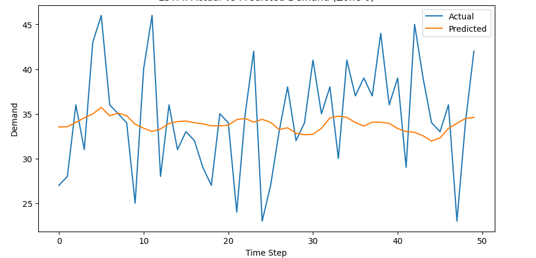
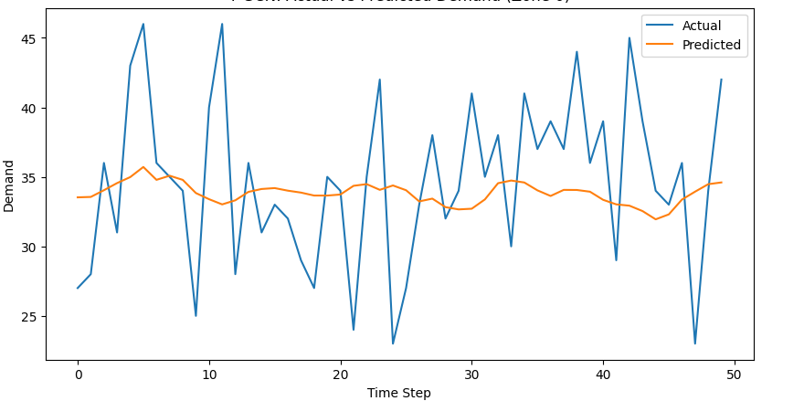

Data Science / Deep Learning / Forecasting
Urban Delivery Demand Prediction
Forecasting hourly last-mile delivery demand across geographical zones using Long Short-Term Memory (LSTM) networks and Temporal Graph Convolutional Networks (T-GCN). Developed as part of the Chameleon Melbourne Open Playground urban delivery demand prediction project.
01. Project Overview
Last-mile delivery operations experience fluctuating demand across locations and time periods. Predicting demand at the zone and hourly level can support operational planning and resource allocation.
This project explored whether incorporating geographical relationships between delivery zones through graph neural networks could improve demand forecasting compared with a temporal LSTM baseline.
02. Data Preparation & Feature Engineering
The workflow began with delivery order records, including timestamps and restaurant coordinates. Data preparation involved examining missing values, converting date-time fields, filtering relevant delivery records and aggregating demand by hour.
- Applied K-Means clustering to restaurant coordinates to define 10 geographical demand zones.
- Aggregated completed delivery orders into hourly demand observations for each zone.
- Constructed historical input sequences for neural network forecasting.
- Used chronological training and testing splits to evaluate predictions on later observations.
03. LSTM Baseline
An LSTM network was developed as a baseline for learning temporal demand patterns from historical observations. The model used recurrent layers with regularisation and was evaluated using Mean Absolute Error (MAE) and Root Mean Squared Error (RMSE).
Baseline Performance
| Metric | Test Result |
|---|---|
| MAE | 4.174 |
| RMSE | 5.583 |
LSTM Prediction Visualisation
The graph compares actual and predicted delivery demand for one geographical zone. The LSTM captures the general demand level but produces relatively smooth predictions, struggling to capture sudden peaks and drops.

04. Temporal Graph Convolutional Network
To incorporate spatial information, a graph-based forecasting approach was investigated. Geographical zones were represented as nodes, with connections describing relationships between zones.
The T-GCN architecture combined graph convolution with recurrent temporal modelling, allowing the experiments to examine both spatial relationships and historical demand behaviour.
Model Experiments
- Original T-GCN using the constructed zone graph.
- Sparse top-k graph configuration to reduce the number of zone connections.
- Feature-enhanced sparse T-GCN to investigate additional temporal information.
T-GCN Prediction Visualisation
The graph compares actual and predicted delivery demand using the original Temporal Graph Convolutional Network. This model incorporates geographical relationships between delivery zones alongside historical demand patterns.

05. Model Evaluation & Comparison
The notebook evaluated multiple configurations using forecasting error metrics. The results below reflect the recorded evaluation outputs.
| Model | MAE | RMSE |
|---|---|---|
| LSTM Baseline | 4.174 | 5.583 |
| Original T-GCN* | 4.174 | 5.583 |
| Sparse Top-K T-GCN | 4.590 | 6.422 |
| Feature-Enhanced T-GCN | 4.716 | 6.490 |
*The exported evaluation displays identical metrics for the LSTM and original T-GCN. This result requires verification before drawing conclusions about their relative performance.
Key Findings
The experiments demonstrated that adding graph structure or additional features did not automatically reduce forecasting error. The sparse configurations recorded higher errors than the LSTM baseline, highlighting the importance of graph design and careful model evaluation.
Explore the Code
Explore the complete Python implementation, including data preprocessing, geographical clustering, LSTM forecasting, T-GCN modelling, and model evaluation.
06. Tools & Technical Skills
07. Key Takeaway
This project provided practical experience in developing and evaluating deep learning approaches for spatio-temporal forecasting. It reinforced the importance of data preparation, geographical representation, controlled experimentation and transparent interpretation of model performance.